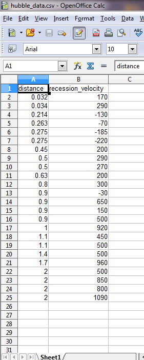
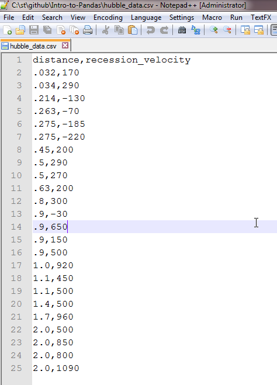
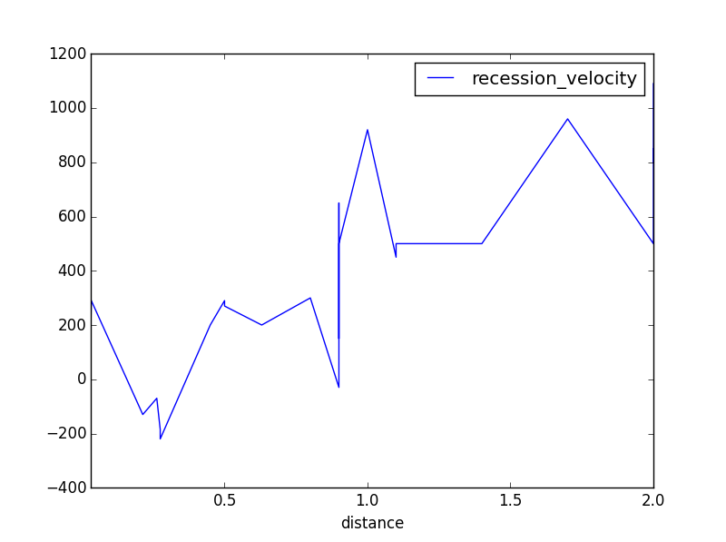
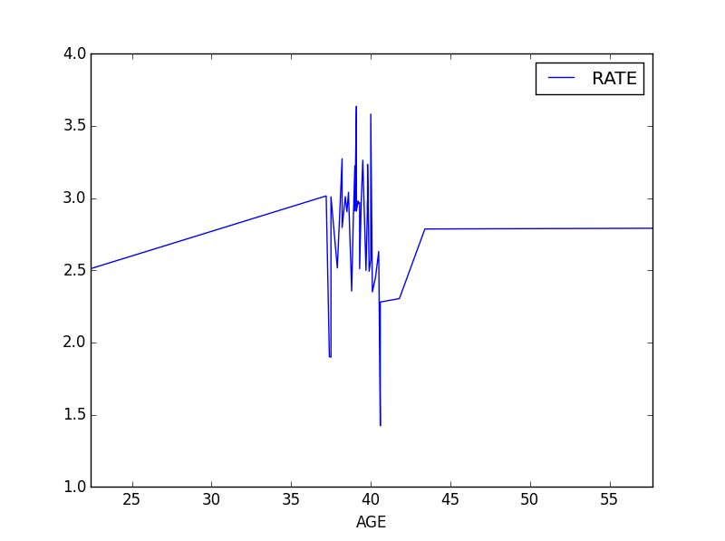

Introduction to Pandas with Practical Examples

Beginners Start Here:
Create a Word Counter in Python
An introduction to Numpy and Matplotlib
Introduction to Pandas with Practical Examples (New)
Main Book
Image and Video Processing in Python
Audio and Digital Signal Processing (DSP)
Machine Learning Section
Machine Learning with an Amazon like Recommendation Engine
This is a quick introduction to Pandas. Rather than giving a theoretical introduction to the millions of features Pandas has, we will be going in using 2 examples:
-
Data from the Hubble Space Telescope
-
Wages Data from the US labour force
The repo for the code is here.
Hubble Data
Let’s start with the Hubble Data. We will see how to read a simple Csv file and plot the data:
Transcript:
We will start with data from the Hubble Space Telescope, one of the most well known space telescopes.
The data is actually quite simple. The file is hubble_data.csv. You can open the file in Ms Excel or OpenOffice. This is what the data looks like in OpenOffice:

hubble1

hubble2
And this is why this format is so popular. You don’t need any special software, like Ms Excel, to open this format. It also means the data will still be readable ten years from now, when newer versions of spreadsheets come out.
Okay, let’s get started. I recommend you open up an Ipython(Jupyter) instance in parallel and run the code along.
import pandas as pd
import matplotlib.pyplot as plt
%pylab inline
We import pandas, which is the main library in Python for data analysis. We also import matplotlib for graphing.
The %pylab inline is an Ipython command, that allows graphs to be embedded in the notebook.
data = pd.read_csv("hubble_data.csv")
data.head()
Pandas makes our life quite easy. You can read a Csv file with just one function: read_csv().
We read our csv, and then call the head() function to print the first five rows.
| distance | recession_velocity | |
|---|---|---|
| 0 | 0.032 | 170 |
| 1 | 0.034 | 290 |
| 2 | 0.214 | -130 |
| 3 | 0.263 | -70 |
| 4 | 0.275 | -185 |
Pandas is quite smart, in that it figures out that the first line of the file is the header. To remind you, this is how the first 3 lines of our csv file look like:
distance,recession_velocity
.032,170
.034,290
You can see we have a header at the top, that gives us the two columns we have: distance and recession_velocity.
Pandas correctly figures this out.
But what if your csv file doesn’t have a header? We can still read the file, by manually providing the headers. I created a second csv files with no headers, hubble_data_no_headers.csv. It’s the same file as before, just with the headers deleted. Have a look, if you want.
This is how we read that file:
headers = ["dist","rec_vel"]
data_no_headers = pd.read_csv("hubble_data_no_headers.csv", names = headers)
data_no_headers.head()
We declare our own headers. I’ve given them different names, dist and rec_vel, to make it clear that this is a different file.
We read the data in the same way, except this time we pass in a new variable names = headers, to tell Pandas to use our headers, as the original file has none. We then print the first five lines.
| dist | rec_vel | |
|---|---|---|
| 0 | 0.032 | 170 |
| 1 | 0.034 | 290 |
| 2 | 0.214 | -130 |
| 3 | 0.263 | -70 |
| 4 | 0.275 | -185 |
Pandas allows you to view just one column:
data_no_headers["dist"]
0 0.032
1 0.034
2 0.214
3 0.263
4 0.275
Okay, now that we have the data, it’s time to plot it.
One way to make our job easier is to remove the index. Pandas by default puts in an index (as do tools like Excel). If you look at the data structure, you will see the index: It’s the left most column, the values that go 0,1,2,3,4…..
If we replace the index with distance, then plotting becomes easy, as distance becomes the x axis, while velocity becomes the y axis.
How do we replace the index?
data.set_index("distance", inplace= True)
data.head()
| recession_velocity | |
|---|---|
| distance | |
| 0.032 | 170 |
| 0.034 | 290 |
| 0.214 | -130 |
| 0.263 | -70 |
| 0.275 | -185 |
Compare to the last example of data- you will see that the old index is gone. Even better, the data above is in a x vs y format.
It is now easy to plot:
data.plot()
plt.show()

hubble3
Wages Data
And next, the wages data. This build on the previous example, and show you how to add your own headers, deal with tab separated files, and extract columns from the data:
Okay, a slightly (but only slightly) more complicated example.
Open up Wage Hours.ipynb notebook. We start as before, importing what we need, and reading the csv file, wages_hours.csv in this case.
import pandas as pd
import matplotlib.pyplot as plt
%pylab inline
data = pd.read_csv("wages_hours.csv")
data.head()
Same as before. We should just read the file, right? Instead, we get this:
| HRS RATE ERSP ERNO NEIN ASSET AGE DEP RACE SCHOOL | |
|---|---|
| 0 | 2157\t2.905\t1121\t291\t380\t7250\t38.5\t2.340… |
| 1 | 2174\t2.970\t1128\t301\t398\t7744\t39.3\t2.335… |
| 2 | 2062\t2.350\t1214\t326\t185\t3068\t40.1\t2.851… |
| 3 | 2111\t2.511\t1203\t49\t117\t1632\t22.4\t1.159\… |
| 4 | 2134\t2.791\t1013\t594\t730\t12710\t57.7\t1.22… |
That looks…messy. Not to mention, it doesn’t look our file at all.
What happened?
Csv doesn’t mean just commas
As Eren Yeager from the Attack on Titan keeps telling us (in his irritating voice), the world is a cruel place.
Even though the name is Comma Separated Values, they can be separated by anything. Including tabs.
The \t in the text above means tabs. Pandas couldn’t parse the file, as it was expecting commas, not tabs.
We’ll read the file again, this time passing in a new variable sep = ‘\t’, which tells Pandas the separator is tabs, not commas.
data = pd.read_csv("wages_hours.csv", sep = "\t")
data.head()
| HRS | RATE | ERSP | ERNO | NEIN | ASSET | AGE | DEP | RACE | SCHOOL | |
|---|---|---|---|---|---|---|---|---|---|---|
| 0 | 2157 | 2.905 | 1121 | 291 | 380 | 7250 | 38.5 | 2.340 | 32.1 | 10.5 |
| 1 | 2174 | 2.970 | 1128 | 301 | 398 | 7744 | 39.3 | 2.335 | 31.2 | 10.5 |
| 2 | 2062 | 2.350 | 1214 | 326 | 185 | 3068 | 40.1 | 2.851 | * | 8.9 |
| 3 | 2111 | 2.511 | 1203 | 49 | 117 | 1632 | 22.4 | 1.159 | 27.5 | 11.5 |
| 4 | 2134 | 2.791 | 1013 | 594 | 730 | 12710 | 57.7 | 1.229 | 32.5 | 8.8 |
That worked.
But there is a lot of data up there. Do we need all of it?
For this project, we will only look at age vs rate (salary). The first thing we need to do is extract those two fields from the dataframe.
data2 = data[["AGE", "RATE"]]
data2.head()
| AGE | RATE | |
|---|---|---|
| 0 | 38.5 | 2.905 |
| 1 | 39.3 | 2.970 |
| 2 | 40.1 | 2.350 |
| 3 | 22.4 | 2.511 |
| 4 | 57.7 | 2.791 |
Okay, to properly graph this, age needs to be in order. Currently, it jumps all over the place. We need it in ascending or descending order.
We’ll go for ascending (which is the default behaviour of the sort() function).
data_sorted = data2.sort_values(["AGE"])
data_sorted.head()
Like last time, we now need to reset the index to age, so we can more easily graph the code:
data_sorted.set_index("AGE", inplace=True)
data_sorted.head()
| RATE | |
|---|---|
| AGE | |
| 22.4 | 2.511 |
| 37.2 | 3.015 |
| 37.4 | 1.901 |
| 37.5 | 1.899 |
| 37.5 | 3.009 |
And we plot it:
data_sorted.plot()
plt.show()

wage1
Of course, this is not a general observation. Only a limited conclusion we can draw from this dataset.